Harjoitus 4: Taitto
Harjoituksen sisältö
Harjoituksessa tehdään valmiista kartasta taitto
Harjoituksen tavoite
Koulutettava oppii käyttämään QGISin taittotyökaluja monipuolisesti ja tekemään informatiivisen karttataiton.
Tehdään kartasta taitto, johon sommitellaan kartan selite, mittakaava, pohjoisnuoli sekä tiedot aineistosta. Esimerkkikuva lopputuloksesta:
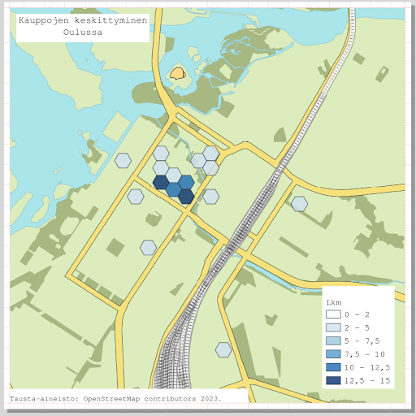
Avaa uusi taitto joko Projekti -> Uusi taitto tai painamalla 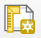 työkalupalkissasi. Anna taitolle kuvaava nimi, esimerkiksi Oulun opaskartta ja paina OK.
Paina tulosalueella hiiren oikealla näppäimellä ja valitse Sivun ominaisuudet. Oletuksena Elementin ominaisuudet -välilehdestä oikeassa paneelissa on paperin kokona A4 ja suunta Vaaka. Muutetaan taiton kokoa 200 x 200 mm. Tarkista Taitto-välilehdestä, että viennin resoluutio on 300 dpi, joka varmistaa sen, että lopputuote on tarpeeksi tarkka ja hyvälaatuinen lähetettäväksi vaikka painofirmalle.
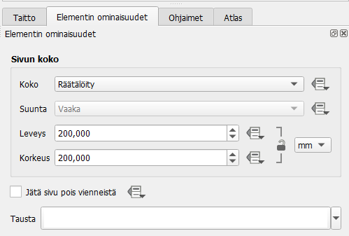 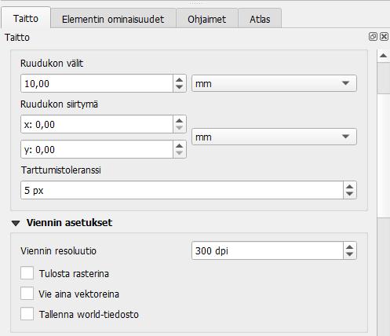
Ennen kuin lisäämme mitään karttakuvaa taittoon, luodaan elementtien sijoittelun helpottamiseksi ruudukko ja reunamarginaalit. Mene ylävalikoista Näytä > Ruudukko. Valitse myös Näytä > Tartu ruudukkoon. Taitto-välilehdeltä oikean reunan paneelista voit asettaa ruudukon välien koon, esimerkiksi 10mm.
Mene seuraavaksi Ohjaimet-välilehdelle. Yleensä painotuotteissa käytetään 3mm marginaalia sivuissa, joten luodaan vaaka- ja pystyohjaimet arvoilla 3mm ja 197mm. Voit lisätä ne helposti painamalla -painiketta ja tuplaklikkaamalla ilmestyvää riviä ja kirjoittamalla arvot niihin.
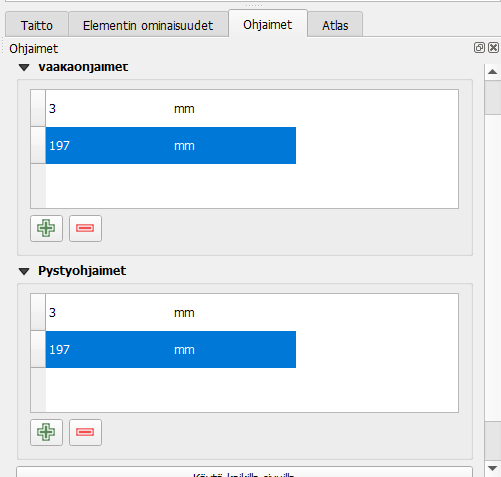
Nyt voimme sijoittaa karttanäkymän tulosteelle. Valitse työkalupalkista työkalu
Vedä paperin alueelle työkalulla suorakulmio, jotta saat QGISin
karttanäkymän mukaisen kartan taittoikkunaan. Kartta piirtyy
taittoikkunaan samalla zoomaustasolla, kun se on karttaikkunan puolella.
Voit rajata kartan mittakaavaa Elementin ominaisuudet -välilehdeltä.
Huomaa, että karttatulosteen hallinnassa on mahdollisuus siirtää
yksittäisiä kohteita (nimikkeitä) tai muokata kartan sijaintia. Kohteen
ollessa valittuna, voit siirtää sitä tulosteella
 -työkalun avulla.
-työkalun avulla.
Elementin ominaisuudet -välilehdellä on useita työkaluja, jotka helpottavat kartan rajauksen ja mittakaavan muokkaamista:
| Päivitä kartta (mikäli olet tehnyt muutoksia pääikkunan puolella) | |
 |
Tuo kartan laajuus pääikkunasta taittoon |
| 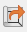 | Vie kartan laajuus taitosta pääikkunaan |
 |
Aseta kartan mittakaava vastaamaan pääikkunaa |
| 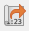 | Aseta pääikkunan mittakaava vastaamaan taittonäkymää |
| 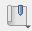 | Käytä spatiaalisia kirjanmerkkejä |
 |
Muokkaa kartan rajausta interaktiivisesti |
 |
Nimiöiden asetukset |
| 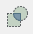 | Leikkauksen asetukset |
Tutki näitä työkaluja ja katso, miten ne toimivat. Olisiko jostain näistä hyötyä sinun työprosesseissasi?
QGISin avulla voit tehdä muutakin kuin lisätä kartan tulosteeseen.
Otsikko tai muu teksti voidaan lisätä Lisää uusi nimiö -työkalulla:
 Lisää uusi selite käyttäen:
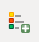 Lisää uusi mittakaava käyttäen:
Lisää uusi selite käyttäen:
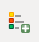 Lisää uusi mittakaava käyttäen:

Huomaa, että näiden taiton elementtien ominaisuuksia voit muokata oikeanpuoleisen sivupalkin Elementin ominaisuudet -välilehden avulla. Valitse ensin haluamasi elementti joko klikkaamalla sitä taitossa tai Elementit-listassa, joka sijaitsee ikkunan oikeassa yläkulmassa.
Tekstin fontin määrittelyn lisäksi tekstikohteille voidaan piirtää tausta tai kehys, sitä voidaan kiertää tai sijoitella eri tavoin suhteessa tekstilaatikkoon. Myös tekstin HTML-muotoilu on mahdollista, jos laitat täpän kohtaan “Tulosta HTML:nä”. Etsi nämä toiminnallisuudet tekstikohteen ominaisuuksista.
Luo seuraavaksi selite karttatulosteeseen. Voit myös muokata selitteen ominaisuuksia Elementin ominaisuudet -välilehdeltä. Huomaa, että sinun on poistettava kohdan Päivitä automaattisesti rasti. Tämän jälkeen voit vaikkapa poistaa kaikki muut tasot kuin Lkm-tason selitteestä valitsemalla ne hiiren vasemmalla ja sitten painamalla 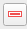 -painiketta. Voit muuttaa myös selitteen fonttia kohdasta “Fontit ja selitteen muotoilu”, määrittää taustan värin/läpinäkyvyyden tai sijoittaa selitevärit oikealle puolelle seliteikkunaa (valitse Arrangement-kohtaan “Symbolit oikealla”).
Pohjoisnuolen lisääminen tapahtuu valitsemalla: 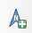
Valitse sen jälkeen Elementin ominaisuudet -ikkunasta mieleisesi pohjoisnuoli-kuva (selaa sisältöä alaspäin, jos et heti näe nuolia).
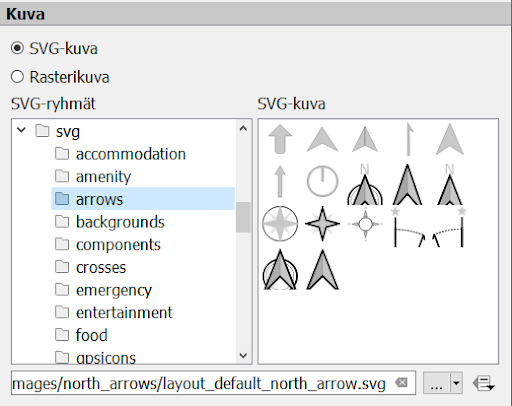
Halutessasi voit tallentaa käyttämäsi tulostemallin (layout englanniksi)
ja hyödyntää sitä jatkossa seuraavien karttatulosteiden tekemiseen. Voit
esimerkiksi muotoilla kollegoidesi käyttöön karttatulostemallin
organisaatiollesi (logot, värit, tekstin paikka, jne.). Tämä onnistuu
Tallenna malliksi  -työkalulla:
Lopputuloksen voit tulostaa tiedostoksi (kuvaksi tai pdf:ksi) tai
tulostimeen.
-työkalulla:
Lopputuloksen voit tulostaa tiedostoksi (kuvaksi tai pdf:ksi) tai
tulostimeen.
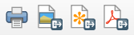
Sopiva resoluutio karttatulosteellesi riippuu kartan käyttötarkoituksesta, mutta oletusarvoinen 300 dpi tallentaa resoluutioltaan hyvinkin tarkkoja kuvia. Kokeile myös PDF-viennissä “Luo geospatiaalinen PDF (GeoPDF)” -toimintoa. Tämä luo PDF-tiedoston, joka voidaan tuoda suoraan QGISiin niin, että se sisältää aineistot ja on georeferoitu oikein.
Psst! Muista tallentaa QGIS-projekti harjoituksen lopuksi.